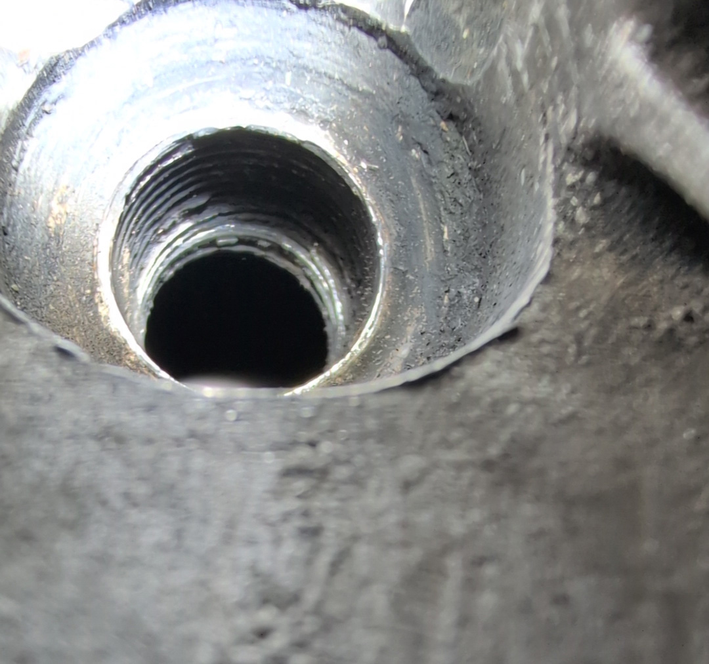

Project · Honda
CB450K1 Black Bomber · 1970
A swap that first looked simple – and then became a thorough restoration.
The more interesting motorcycle
I exchanged my restored CB900F Bol d'Or for this CB450K1. The 900 had become too heavy for me; the older, lighter CB450 seemed the more interesting motorcycle. At first it looked good too: new final-drive parts, fresh oil – then simply ride it. That was the plan.
When I removed the right spark plug, it came out after just two turns. There was already a thread-repair insert in the cylinder head, but it had also failed; only the last two threads remained. A lasting repair meant taking the engine out. A specialist in Hanover fitted a larger thread-repair insert that only just had enough room. Four new valves were fitted and lapped at the same time.
Rust marks on the cylinder walls also ruled out a half-measure: rebore, hone, new first-oversize pistons and a new timing chain. Once the engine is out, a small plan quickly becomes a full project: powder-coating the frame, renewing the final drive, repainting the headlamp shell, a new front mudguard, a new exhaust system and many further details.
The early CB450 was Honda's first large twin with double overhead camshafts – technology then usually reserved for racing motorcycles. Its Black Bomber nickname arose in Britain: the early black machines not only looked the part, they were also seen as serious competition for the big British twins. The CB450 was smaller than many of its rivals, yet quick, reliable and remarkably modern.
Was the exchange worth it? On paper, perhaps not: a well-restored motorcycle for one with hidden repair needs. Today the CB450 is once again in very good condition, light to ride and great fun. For me, it was the right exchange.
Photo gallery
The beginning
This is how the CB450 arrived: at first glance, it did not look bad at all.

